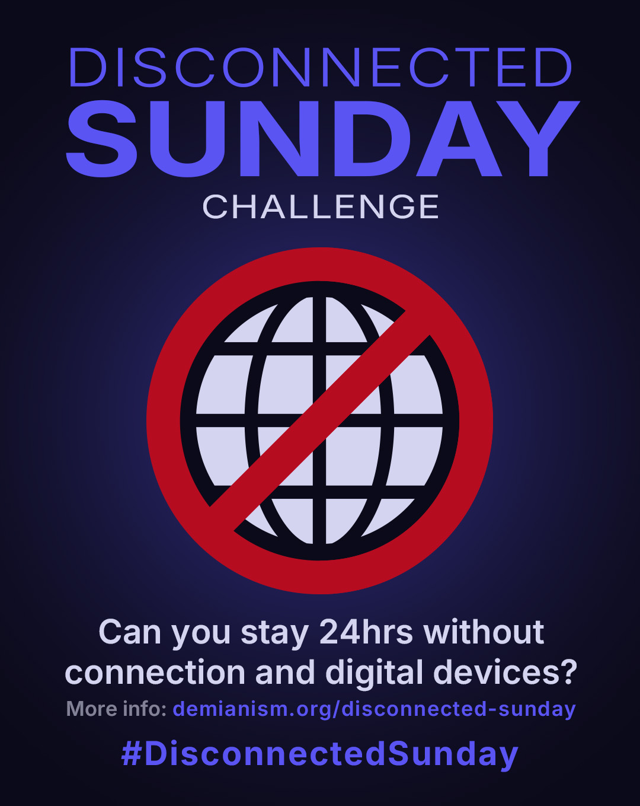

Disconnected Sunday
Our lives are increasingly sucked into digital screens, in a way that risks costing us our humanity. Demianism holds weekly disconnection as sacred: its 10th axiom simply says “Disconnect on Sundays”.
That's something everybody should try at least once and see what it does to them. Therefore I propose the Disconnected Sunday as a standing challenge, open to anybody, Demianist or not.

How it works
It starts on a Sunday, when you wake up, and ends when you go to sleep — a full waking day. Two versions:
No Wi-Fi, no mobile internet, no Bluetooth. No TV, no video games, no AI, no use of digital devices in general.
Exceptions: with your disconnected devices you can still take photos or videos, play music, or navigate if you’re driving. Reading and writing are always allowed. Watching videos is not — unless you go to the movie theater.
No use of digital devices at all. Full stop.
What would you do in your Disconnected Sunday? That’s yours to decide. Plan it in advance if you can — ideally with someone else, a partner, a friend, a family member.
Share your experience
What did you do with your day? Was it hard to stay disconnected? Which challenges did you face? What did you learn?
Share your experience however you want — text, photos, audio, video — with the hashtag #DisconnectedSunday. Obviously you cannot do it on Sunday, you have to way for the next day! Feel welcome to share also on the Demianist forum.
Purpose of this challenge
This isn’t a stunt. It’s an open experiment. The more people try it and share what happened, the more we learn about how hyper-connected humans react to a day without screens — whether we reconnect with something real, or just feel bored and lost. Enough experiences shared, and it stops being anecdote and starts being data worth studying and learning from.
This challenge also exists because Demianism holds Sunday disconnection as sacred, therefore we have to build a tradition around it. Your experience and feedback can help shape what that tradition should actually look like.
Tag your experience so it can be found and shared.